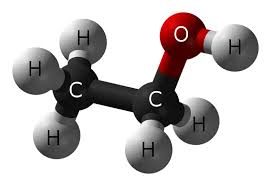
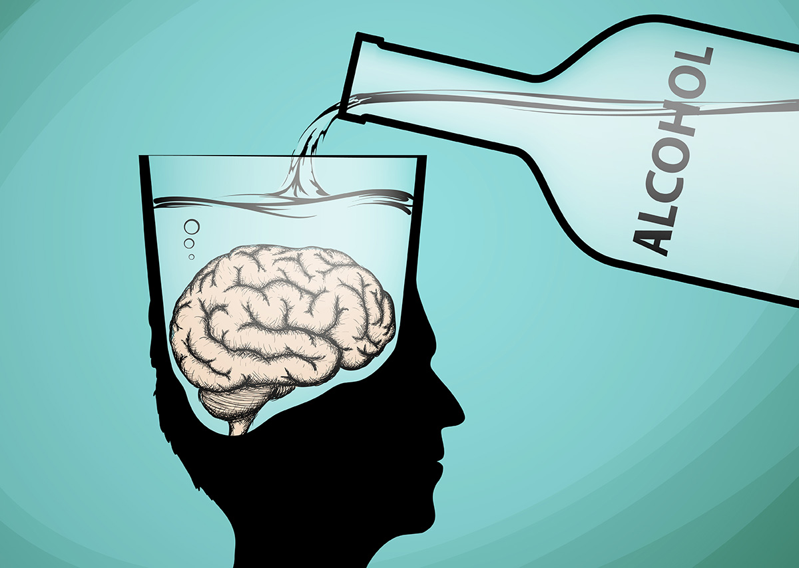

EFFETTI DELL'ALCOL SUL NOSTRO CORPO
L'alcol colpisce i recettori nel cervello e agisce come un depressivo del sistema nervoso centrale, rallentando le funzioni cerebrali. Questo porta a effetti come riduzione delle inibizioni, compromissione del giudizio, coordinazione motoria alterata e aumento della sensazione di rilassamento e piacere, grazie al rilascio di dopamina. Inoltre, come si vede spesso nelle persone ubriache, le capacità decisionali e motorie sono compromesse, aumentando il rischio di incidenti e comportamenti pericolosi. L'alcol è considerato un diuretico infatti causa perdita di liquidi e il classico "hangover" o postumi della sbornia.
E' stato provato ancora una volta che l'alcol ha un effetto maggiore sul sonno man mano che si invecchia, rendendolo più fragile. I dati mostrano che le persone più anziane sperimentano un'interruzione del sonno più intensa rispetto ai giovani infatti durante il monitoraggio del sonno, si vede evidentemente una diminuzione del sonno profondo nel corso della notte.
 